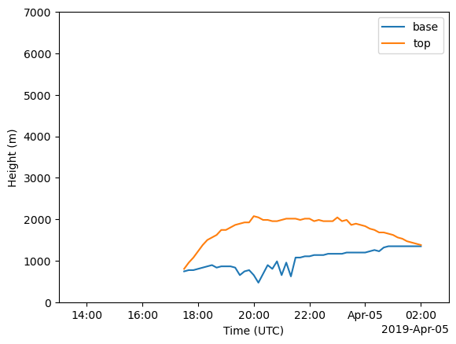

Clouds over SGP for April 4, 2019
Looking at LASSO data for April 4, 2019 to see meterological data and calculate cloud base and cloud top.
Imports
from datetime import datetime
import numpy as np
import xarray as xr
import xwrf
import matplotlib.pyplot as plt
Bring in the data
Here is the raw model output from LASSO.
path_shcu_root = "/data/project/ARM_Summer_School_2024_Data/lasso_tutorial/ShCu/untar" # on Jupyter
case_date = datetime(2019, 4, 4)
sim_id = 7
ds_stat = xr.open_dataset(f"{path_shcu_root}/{case_date:%Y%m%d}/sim{sim_id:04d}/raw_model/wrfstat_d01_{case_date:%Y-%m-%d_12:00:00}.nc")
ds_stat
ds_stat["Time"] = ds_stat["XTIME"]
Find the indices of the boundary layer depth - in case we happen to care about that later
ds_stat["bottom_top"] = ds_stat.bottom_top
ds_stat
ki = ds_stat['CSP_THL'].idxmin(dim='bottom_top')
ki
<xarray.DataArray 'bottom_top' (Time: 91)> Size: 728B
array([ 0., 0., 0., 0., 0., 0., 0., 0., 0., 0., 1., 1., 1.,
2., 2., 2., 3., 3., 3., 2., 2., 2., 3., 3., 3., 4.,
4., 4., 5., 5., 5., 5., 5., 6., 6., 7., 7., 7., 7.,
8., 10., 12., 13., 13., 12., 12., 12., 11., 11., 11., 10., 11.,
11., 11., 10., 11., 10., 10., 10., 10., 10., 10., 10., 9., 9.,
9., 9., 8., 8., 7., 7., 6., 6., 4., 3., 0., 0., 0.,
0., 0., 0., 0., 0., 0., 0., 0., 0., 0., 0., 0., 0.])
Coordinates:
XTIME (Time) datetime64[ns] 728B 2019-04-04T12:00:00 ... 2019-04-05T03...
Dimensions without coordinates: TimeLet’s look at some meteorological info for this date
plot_ql = ds_stat['CSP_QL'].assign_coords(height = (ds_stat["CSP_Z"]))
plot_ql.isel(Time=slice(6,None)).plot(x = 'Time',y = 'height', ylim=[0,7000])
<matplotlib.collections.QuadMesh at 0x7fab40e4f7d0>
plot_lwc = ds_stat['CSP_LWC'].assign_coords(height = (ds_stat["CSP_Z"]))
plot_lwc.isel(Time=slice(6,None)).plot(x = 'Time',y = 'height', ylim=[0,7000])
<matplotlib.collections.QuadMesh at 0x7fab32a82090>
plot_thl = ds_stat['CSP_TH'].assign_coords(height = (ds_stat["CSP_Z"]))
plot_thl.isel(Time=slice(6,None)).plot(x = 'Time',y = 'height', ylim=[0,7000],vmin=298,vmax=320)
<matplotlib.collections.QuadMesh at 0x7fab40c3b0d0>
Fix some height things so that we can plot…
The z values are time dependent, so we need to deal with the height values by assuming that the first time step is close enough
We also need to make bottom_top a coordinate so that we aren’t yelled at by errors
ds_stat["bottom_top"] = ds_stat.bottom_top
ds_stat['bottom_top'] = ds_stat['CSP_Z'].isel(Time = 1).values
ds_stat['bottom_top'].values # make sure that these are heights and not indicies
array([ 15.215184, 45.605114, 75.94632 , 106.27506 ,
136.59618 , 166.91183 , 197.23079 , 227.55254 ,
257.86115 , 288.1541 , 318.44684 , 348.74237 ,
379.03595 , 409.33054 , 439.62314 , 469.91293 ,
500.20493 , 530.4964 , 560.79016 , 591.11 ,
621.4132 , 651.6837 , 681.9462 , 712.2066 ,
742.4813 , 772.7549 , 803.0155 , 833.27167 ,
863.53253 , 893.79333 , 924.05646 , 954.3343 ,
984.625 , 1014.9191 , 1045.2263 , 1075.5452 ,
1105.8611 , 1136.1669 , 1166.4724 , 1196.7739 ,
1227.061 , 1257.3391 , 1287.613 , 1317.8835 ,
1348.1545 , 1378.427 , 1408.7014 , 1438.9777 ,
1469.2583 , 1499.5316 , 1529.7927 , 1560.058 ,
1590.3406 , 1620.6185 , 1650.8711 , 1681.1194 ,
1711.373 , 1741.6282 , 1771.863 , 1802.084 ,
1832.3059 , 1862.5199 , 1892.7288 , 1922.9358 ,
1953.1406 , 1983.3519 , 2013.5719 , 2043.8057 ,
2074.0422 , 2104.2583 , 2134.4634 , 2164.6702 ,
2194.8755 , 2225.0752 , 2255.268 , 2285.4622 ,
2315.6643 , 2345.861 , 2376.0405 , 2406.2173 ,
2436.3982 , 2466.58 , 2496.766 , 2526.9626 ,
2557.1538 , 2587.3315 , 2617.5088 , 2647.6782 ,
2677.8381 , 2708.0024 , 2738.185 , 2768.3545 ,
2798.5044 , 2828.6675 , 2858.8428 , 2889.018 ,
2919.1719 , 2949.3062 , 2979.443 , 3009.5776 ,
3039.703 , 3069.83 , 3099.9514 , 3130.066 ,
3160.1882 , 3190.3154 , 3220.4434 , 3250.5742 ,
3280.702 , 3310.8237 , 3340.931 , 3371.0188 ,
3401.102 , 3431.1902 , 3461.293 , 3491.3945 ,
3521.4683 , 3551.5403 , 3581.6167 , 3611.6907 ,
3641.769 , 3671.8528 , 3701.933 , 3732.0137 ,
3762.0945 , 3792.1685 , 3822.2473 , 3852.3481 ,
3882.4512 , 3912.5269 , 3942.5942 , 3972.6646 ,
4002.7378 , 4032.811 , 4062.8813 , 4092.9517 ,
4123.02 , 4153.09 , 4183.161 , 4213.229 ,
4243.2993 , 4273.3696 , 4303.4385 , 4333.5093 ,
4363.5786 , 4393.6553 , 4423.735 , 4453.8096 ,
4483.88 , 4513.9585 , 4544.05 , 4574.1533 ,
4604.2773 , 4634.3887 , 4664.45 , 4694.4854 ,
4724.5103 , 4754.531 , 4784.547 , 4814.564 ,
4844.583 , 4874.598 , 4904.608 , 4934.618 ,
4964.6323 , 4994.6475 , 5024.664 , 5055.481 ,
5087.9473 , 5122.214 , 5158.3315 , 5196.3467 ,
5236.46 , 5278.7236 , 5323.2344 , 5370.1943 ,
5419.6626 , 5471.841 , 5526.9717 , 5585.007 ,
5646.068 , 5710.3896 , 5778.146 , 5849.596 ,
5924.9067 , 6004.247 , 6087.865 , 6176.043 ,
6268.9814 , 6366.915 , 6470.13 , 6578.867 ,
6693.4404 , 6814.2485 , 6941.7056 , 7076.026 ,
7217.5884 , 7366.8086 , 7524.0337 , 7689.741 ,
7864.397 , 8048.4517 , 8242.3955 , 8446.839 ,
8662.638 , 8890.157 , 9130.356 , 9383.886 ,
9650.805 , 9932.354 , 10227.337 , 10527.948 ,
10828.727 , 11129.923 , 11431.03 , 11731.875 ,
12032.737 , 12333.832 , 12635.557 , 12937.003 ,
13237.864 , 13538.295 , 13838.356 , 14138.922 ,
14440.3545 , 14719.19 ], dtype=float32)
Calculate cloud base and top from the liquid water conent and the liquid water mixing ratio
ds_stat['cb_lwc'] = (ds_stat['CSP_LWC']>0).idxmax(dim = 'bottom_top')
ds_stat['cb_lwc'] = ds_stat['cb_lwc'].where(ds_stat['cb_lwc']>ds_stat['bottom_top'][0])
print(ds_stat['cb_lwc'])
ds_stat['ct_lwc'] = ((ds_stat['CSP_LWC'].isel(bottom_top = slice(None, None, -1)))>0).idxmax(dim='bottom_top')
ds_stat['ct_lwc'] = ds_stat['ct_lwc'].where(ds_stat['ct_lwc']<ds_stat['bottom_top'][-1])
print(ds_stat['ct_lwc'])
<xarray.DataArray 'cb_lwc' (Time: 91)> Size: 364B
array([ nan, nan, nan, nan, nan,
nan, nan, nan, nan, nan,
nan, nan, nan, nan, nan,
nan, nan, nan, nan, nan,
nan, nan, nan, nan, nan,
nan, nan, nan, nan, nan,
nan, nan, nan, 742.4813 , 772.7549 ,
772.7549 , 803.0155 , 833.27167, 863.53253, 893.79333,
833.27167, 863.53253, 863.53253, 863.53253, 833.27167,
651.6837 , 742.4813 , 772.7549 , 651.6837 , 469.91293,
681.9462 , 893.79333, 803.0155 , 984.625 , 651.6837 ,
954.3343 , 621.4132 , 1075.5452 , 1075.5452 , 1105.8611 ,
1105.8611 , 1136.1669 , 1136.1669 , 1136.1669 , 1166.4724 ,
1166.4724 , 1166.4724 , 1166.4724 , 1196.7739 , 1196.7739 ,
1196.7739 , 1196.7739 , 1196.7739 , 1227.061 , 1257.3391 ,
1227.061 , 1317.8835 , 1348.1545 , 1348.1545 , 1348.1545 ,
1348.1545 , 1348.1545 , 1348.1545 , 1348.1545 , 1348.1545 ,
nan, nan, nan, nan, nan,
nan], dtype=float32)
Coordinates:
XTIME (Time) datetime64[ns] 728B ...
* Time (Time) datetime64[ns] 728B 2019-04-04T12:00:00 ... 2019-04-05T03...
<xarray.DataArray 'ct_lwc' (Time: 91)> Size: 364B
array([ nan, nan, nan, nan, nan, nan,
nan, nan, nan, nan, nan, nan,
nan, nan, nan, nan, nan, nan,
nan, nan, nan, nan, nan, nan,
nan, nan, nan, nan, nan, nan,
nan, nan, nan, 803.0155, 954.3343, 1075.5452,
1227.061 , 1378.427 , 1499.5316, 1560.058 , 1620.6185, 1741.6282,
1741.6282, 1802.084 , 1862.5199, 1892.7288, 1922.9358, 1922.9358,
2074.0422, 2043.8057, 1983.3519, 1983.3519, 1953.1406, 1953.1406,
1983.3519, 2013.5719, 2013.5719, 2013.5719, 1983.3519, 2013.5719,
2013.5719, 1953.1406, 1983.3519, 1953.1406, 1953.1406, 1953.1406,
2043.8057, 1953.1406, 1983.3519, 1862.5199, 1892.7288, 1862.5199,
1832.3059, 1771.863 , 1741.6282, 1681.1194, 1681.1194, 1650.8711,
1620.6185, 1560.058 , 1529.7927, 1469.2583, 1438.9777, 1408.7014,
1378.427 , nan, nan, nan, nan, nan,
nan], dtype=float32)
Coordinates:
XTIME (Time) datetime64[ns] 728B ...
* Time (Time) datetime64[ns] 728B 2019-04-04T12:00:00 ... 2019-04-05T03...
ds_stat['cb_lwc'].plot(label='base',ylim = (0,7000),xlim = (ds_stat['CSP_Z'].Time[6],ds_stat['CSP_Z'].Time[-1]))
ds_stat['ct_lwc'].plot(label='top',ylim = (0,7000),xlim = (ds_stat['CSP_Z'].Time[6],ds_stat['CSP_Z'].Time[-1]))
plt.legend()
plt.ylabel('Height (m)')
plt.xlabel('Time (UTC)')
plt.show()

ds_stat['cb_ql'] = (ds_stat['CSP_LWC']>0).idxmax(dim = 'bottom_top')
ds_stat['cb_ql'] = ds_stat['cb_ql'].where(ds_stat['cb_ql']>ds_stat['bottom_top'][0])
print(ds_stat['cb_ql'])
ds_stat['ct_ql'] = ((ds_stat['CSP_LWC'].isel(bottom_top = slice(None, None, -1)))>0).idxmax(dim='bottom_top')
ds_stat['ct_ql'] = ds_stat['ct_ql'].where(ds_stat['ct_ql']<ds_stat['bottom_top'][-1])
print(ds_stat['ct_ql'])
<xarray.DataArray 'cb_ql' (Time: 91)> Size: 364B
array([ nan, nan, nan, nan, nan,
nan, nan, nan, nan, nan,
nan, nan, nan, nan, nan,
nan, nan, nan, nan, nan,
nan, nan, nan, nan, nan,
nan, nan, nan, nan, nan,
nan, nan, nan, 742.4813 , 772.7549 ,
772.7549 , 803.0155 , 833.27167, 863.53253, 893.79333,
833.27167, 863.53253, 863.53253, 863.53253, 833.27167,
651.6837 , 742.4813 , 772.7549 , 651.6837 , 469.91293,
681.9462 , 893.79333, 803.0155 , 984.625 , 651.6837 ,
954.3343 , 621.4132 , 1075.5452 , 1075.5452 , 1105.8611 ,
1105.8611 , 1136.1669 , 1136.1669 , 1136.1669 , 1166.4724 ,
1166.4724 , 1166.4724 , 1166.4724 , 1196.7739 , 1196.7739 ,
1196.7739 , 1196.7739 , 1196.7739 , 1227.061 , 1257.3391 ,
1227.061 , 1317.8835 , 1348.1545 , 1348.1545 , 1348.1545 ,
1348.1545 , 1348.1545 , 1348.1545 , 1348.1545 , 1348.1545 ,
nan, nan, nan, nan, nan,
nan], dtype=float32)
Coordinates:
XTIME (Time) datetime64[ns] 728B ...
* Time (Time) datetime64[ns] 728B 2019-04-04T12:00:00 ... 2019-04-05T03...
<xarray.DataArray 'ct_ql' (Time: 91)> Size: 364B
array([ nan, nan, nan, nan, nan, nan,
nan, nan, nan, nan, nan, nan,
nan, nan, nan, nan, nan, nan,
nan, nan, nan, nan, nan, nan,
nan, nan, nan, nan, nan, nan,
nan, nan, nan, 803.0155, 954.3343, 1075.5452,
1227.061 , 1378.427 , 1499.5316, 1560.058 , 1620.6185, 1741.6282,
1741.6282, 1802.084 , 1862.5199, 1892.7288, 1922.9358, 1922.9358,
2074.0422, 2043.8057, 1983.3519, 1983.3519, 1953.1406, 1953.1406,
1983.3519, 2013.5719, 2013.5719, 2013.5719, 1983.3519, 2013.5719,
2013.5719, 1953.1406, 1983.3519, 1953.1406, 1953.1406, 1953.1406,
2043.8057, 1953.1406, 1983.3519, 1862.5199, 1892.7288, 1862.5199,
1832.3059, 1771.863 , 1741.6282, 1681.1194, 1681.1194, 1650.8711,
1620.6185, 1560.058 , 1529.7927, 1469.2583, 1438.9777, 1408.7014,
1378.427 , nan, nan, nan, nan, nan,
nan], dtype=float32)
Coordinates:
XTIME (Time) datetime64[ns] 728B ...
* Time (Time) datetime64[ns] 728B 2019-04-04T12:00:00 ... 2019-04-05T03...
ds_stat['cb_ql'].plot(label='base',ylim = (0,7000),xlim = (ds_stat['CSP_Z'].Time[6],ds_stat['CSP_Z'].Time[-1]))
ds_stat['ct_ql'].plot(label='top',ylim = (0,7000),xlim = (ds_stat['CSP_Z'].Time[6],ds_stat['CSP_Z'].Time[-1]))
plt.legend()
plt.ylabel('Height (m)')
plt.xlabel('Time (UTC)')
plt.show()